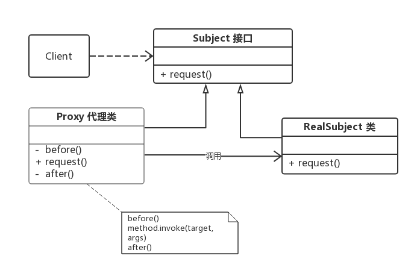
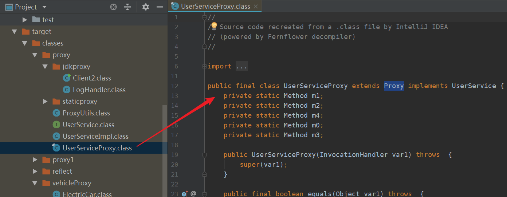
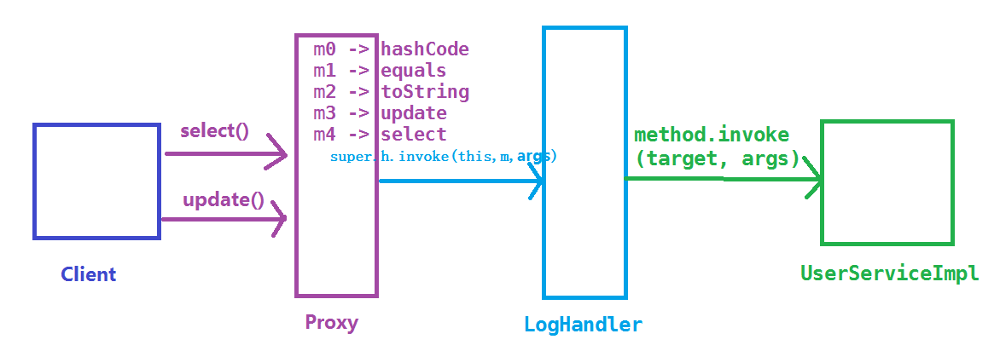

动态代理在 Java 中有着广泛的应用，比如 Spring AOP、Hibernate 数据查询、测试框架的后端 mock、RPC 远程调用、Java 注解对象获取、日志、用户鉴权、全局性异常处理、性能监控，甚至事务处理等。
本文主要介绍 Java 中两种常见的动态代理方式：JDK 原生动态代理和 CGLIB 动态代理。
由于 Java 动态代理与 Java 反射机制关系紧密，请读者确保已经了解了 Java 反射机制，可参考上一篇文章《Java反射机制详解》 。
代理模式 本文将介绍的 Java 动态代理与设计模式中的代理模式有关，什么是代理模式呢？
代理模式： 给某一个对象提供一个代理，并由代理对象来控制对真实对象的访问。代理模式是一种结构型设计模式。
代理模式角色分为 3 种：
Subject（抽象主题角色）： 定义代理类和真实主题的公共对外方法，也是代理类代理真实主题的方法；
RealSubject（真实主题角色）： 真正实现业务逻辑的类；
Proxy（代理主题角色）： 用来代理和封装真实主题；
代理模式的结构比较简单，其核心是代理类，为了让客户端能够一致性地对待真实对象和代理对象，在代理模式中引入了抽象层

代理模式按照职责（使用场景）来分类，至少可以分为以下几类：1、远程代理。 2、虚拟代理。 3、Copy-on-Write 代理。 4、保护（Protect or Access）代理。 5、Cache代理。 6、防火墙（Firewall）代理。 7、同步化（Synchronization）代理。 8、智能引用（Smart Reference）代理等等。
如果根据字节码的创建时机来分类，可以分为静态代理和动态代理：
所谓静态也就是在程序运行前就已经存在代理类的字节码文件，代理类和真实主题角色的关系在运行前就确定了。
而动态代理的源码是在程序运行期间由 JVM 根据反射等机制动态的生成，所以在运行前并不存在代理类的字节码文件。
静态代理 我们先通过实例来学习静态代理，然后理解静态代理的缺点，再来学习本文的主角：动态代理
编写一个接口 UserService ，以及该接口的一个实现类 UserServiceImpl
1 2 3 4 5 6 7 8 9 10 11 12 13 public interface UserService { public void select(); public void update(); } public class UserServiceImpl implements UserService { public void select() { System.out.println("查询 selectById"); } public void update() { System.out.println("更新 update"); } }
我们将通过静态代理对 UserServiceImpl 进行功能增强，在调用 select 和 update 之前记录一些日志。写一个代理类 UserServiceProxy，代理类需要实现 UserService
1 2 3 4 5 6 7 8 9 10 11 12 13 14 15 16 17 18 19 20 21 22 23 24 public class UserServiceProxy implements UserService { private UserService target; // 被代理的对象 public UserServiceProxy(UserService target) { this.target = target; } public void select() { before(); target.select(); // 这里才实际调用真实主题角色的方法 after(); } public void update() { before(); target.update(); // 这里才实际调用真实主题角色的方法 after(); } private void before() { // 在执行方法之前执行 System.out.println(String.format("log start time [%s] ", new Date())); } private void after() { // 在执行方法之后执行 System.out.println(String.format("log end time [%s] ", new Date())); } }
客户端测试
1 2 3 4 5 6 7 8 9 public class Client1 { public static void main(String[] args) { UserService userServiceImpl = new UserServiceImpl(); UserService proxy = new UserServiceProxy(userServiceImpl); proxy.select(); proxy.update(); } }
输出
1 2 3 4 5 6 log start time [Thu Dec 20 14:13:25 CST 2018] 查询 selectById log end time [Thu Dec 20 14:13:25 CST 2018] log start time [Thu Dec 20 14:13:25 CST 2018] 更新 update log end time [Thu Dec 20 14:13:25 CST 2018]
通过静态代理，我们达到了功能增强的目的，而且没有侵入原代码，这是静态代理的一个优点。
静态代理的缺点 虽然静态代理实现简单，且不侵入原代码，但是，当场景稍微复杂一些的时候，静态代理的缺点也会暴露出来。
当需要代理多个类的时候，由于代理对象要实现与目标对象一致的接口，有两种方式：
只维护一个代理类，由这个代理类实现多个接口，但是这样就导致代理类过于庞大。
新建多个代理类，每个目标对象对应一个代理类，但是这样会产生过多的代理类。
当接口需要增加、删除、修改方法的时候，目标对象与代理类都要同时修改，不易维护。
如何改进？ 当然是让代理类动态的生成啦，也就是动态代理。
为什么类可以动态的生成？
通过一个类的全限定名来获取定义此类的二进制字节流
将这个字节流所代表的静态存储结构转化为方法区的运行时数据结构
在内存中生成一个代表这个类的 java.lang.Class 对象，作为方法区这个类的各种数据访问入口
由于虚拟机规范对这 3 点要求并不具体，所以实际的实现是非常灵活的，关于第 1 点，获取类的二进制字节流（class字节码）就有很多途径：
从ZIP包获取，这是 JAR、EAR、WAR 等格式的基础
从网络中获取，典型的应用是 Applet
运行时计算生成，这种场景使用最多的是动态代理技术，在 java.lang.reflect.Proxy 类中，就是用了 ProxyGenerator.generateProxyClass 来为特定接口生成形式为 *$Proxy 的代理类的二进制字节流
由其它文件生成，典型应用是 JSP，即由 JSP 文件生成对应的 Class 类
从数据库中获取等等
所以，动态代理就是想办法，根据接口或目标对象，计算出代理类的字节码，然后再加载到 JVM 中使用。但是如何计算？如何生成？情况也许比想象的复杂得多，我们需要借助现有的方案。
常见的字节码操作类库
Apache BCEL (Byte Code Engineering Library)：是 Java classworking 广泛使用的一种框架，它可以深入到 JVM 汇编语言进行类操作的细节。
ObjectWeb ASM：是一个 Java 字节码操作框架。它可以用于直接以二进制形式动态生成 stub 根类或其他代理类，或者在加载时动态修改类。
CGLIB(Code Generation Library)：是一个功能强大，高性能和高质量的代码生成库，用于扩展 Java 类并在运行时实现接口。
Javassist：是 Java 的加载时反射系统，它是一个用于在 Java 中编辑字节码的类库; 它使 Java 程序能够在运行时定义新类，并在 JVM 加载之前修改类文件。
…
实现动态代理的思考方向 为了让生成的代理类与目标对象（真实主题角色）保持一致性，从现在开始将介绍以下两种最常见的方式：
通过实现接口的方式 -> JDK 动态代理
通过继承类的方式 -> CGLIB 动态代理
注：使用ASM对使用者要求比较高，使用 Javassist 会比较麻烦
JDK 动态代理 JDK 动态代理主要涉及两个类：java.lang.reflect.Proxy 和 java.lang.reflect.InvocationHandler ，我们仍然通过案例来学习。
编写一个调用逻辑处理器 LogHandler 类，提供日志增强功能，并实现 InvocationHandler 接口；在 LogHandler 中维护一个目标对象，这个对象是被代理的对象（真实主题角色）；在 invoke 方法中编写方法调用的逻辑处理
1 2 3 4 5 6 7 8 9 10 11 12 13 14 15 16 17 18 19 20 21 22 23 24 25 26 import java.lang.reflect.InvocationHandler; import java.lang.reflect.Method; import java.util.Date; public class LogHandler implements InvocationHandler { Object target; // 被代理的对象，实际的方法执行者 public LogHandler(Object target) { this.target = target; } @Override public Object invoke(Object proxy, Method method, Object[] args) throws Throwable { before(); Object result = method.invoke(target, args); // 调用 target 的 method 方法 after(); return result; // 返回方法的执行结果 } // 调用invoke方法之前执行 private void before() { System.out.println(String.format("log start time [%s] ", new Date())); } // 调用invoke方法之后执行 private void after() { System.out.println(String.format("log end time [%s] ", new Date())); } }
编写客户端，获取动态生成的代理类的对象须借助 Proxy 类的 newProxyInstance 方法，具体步骤可见代码和注释
1 2 3 4 5 6 7 8 9 10 11 12 13 14 15 16 17 18 19 20 21 22 23 24 25 26 27 28 29 30 31 32 33 import proxy.UserService; import proxy.UserServiceImpl; import java.lang.reflect.InvocationHandler; import java.lang.reflect.Proxy; public class Client2 { public static void main(String[] args) throws IllegalAccessException, InstantiationException { // 设置变量可以保存动态代理类，默认名称以 $Proxy0 格式命名 // System.getProperties().setProperty("sun.misc.ProxyGenerator.saveGeneratedFiles", "true"); // 1. 创建被代理的对象，UserService接口的实现类 UserServiceImpl userServiceImpl = new UserServiceImpl(); // 2. 获取对应的 ClassLoader ClassLoader classLoader = userServiceImpl.getClass().getClassLoader(); // 3. 获取所有接口的Class，这里的UserServiceImpl只实现了一个接口UserService， Class[] interfaces = userServiceImpl.getClass().getInterfaces(); // 4. 创建一个将传给代理类的调用请求处理器，处理所有的代理对象上的方法调用 // 这里创建的是一个自定义的日志处理器，须传入实际的执行对象 userServiceImpl InvocationHandler logHandler = new LogHandler(userServiceImpl); /* 5.根据上面提供的信息，创建代理对象 在这个过程中， a.JDK会通过根据传入的参数信息动态地在内存中创建和.class 文件等同的字节码 b.然后根据相应的字节码转换成对应的class， c.然后调用newInstance()创建代理实例 */ UserService proxy = (UserService) Proxy.newProxyInstance(classLoader, interfaces, logHandler); // 调用代理的方法 proxy.select(); proxy.update(); // 保存JDK动态代理生成的代理类，类名保存为 UserServiceProxy // ProxyUtils.generateClassFile(userServiceImpl.getClass(), "UserServiceProxy"); } }
运行结果
1 2 3 4 5 6 log start time [Thu Dec 20 16:55:19 CST 2018] 查询 selectById log end time [Thu Dec 20 16:55:19 CST 2018] log start time [Thu Dec 20 16:55:19 CST 2018] 更新 update log end time [Thu Dec 20 16:55:19 CST 2018]
InvocationHandler 和 Proxy 的主要方法介绍如下：
java.lang.reflect.InvocationHandler：
Object invoke(Object proxy, Method method, Object[] args) 定义了代理对象调用方法时希望执行的动作，用于集中处理在动态代理类对象上的方法调用
java.lang.reflect.Proxy：
static InvocationHandler getInvocationHandler(Object proxy) 用于获取指定代理对象所关联的调用处理器
static Class getProxyClass(ClassLoader loader, Class… interfaces) 返回指定接口的代理类
static Object newProxyInstance(ClassLoader loader, Class<?>[] interfaces, InvocationHandler h) 构造实现指定接口的代理类的一个新实例，所有方法会调用给定处理器对象的 invoke 方法
static boolean isProxyClass(Class<?> cl) 返回 cl 是否为一个代理类
代理类的调用过程 生成的代理类到底长什么样子呢？借助下面的工具类，把代理类保存下来再探个究竟
1 2 3 4 5 6 7 8 9 10 11 12 13 14 15 16 17 18 19 20 21 22 23 24 25 26 27 28 29 30 31 32 import sun.misc.ProxyGenerator; import java.io.FileOutputStream; import java.io.IOException; public class ProxyUtils { /** * 将根据类信息动态生成的二进制字节码保存到硬盘中，默认的是clazz目录下 * params: clazz 需要生成动态代理类的类 * proxyName: 为动态生成的代理类的名称 */ public static void generateClassFile(Class clazz, String proxyName) { // 根据类信息和提供的代理类名称，生成字节码 byte[] classFile = ProxyGenerator.generateProxyClass(proxyName, clazz.getInterfaces()); String paths = clazz.getResource(".").getPath(); System.out.println(paths); FileOutputStream out = null; try { //保留到硬盘中 out = new FileOutputStream(paths + proxyName + ".class"); out.write(classFile); out.flush(); } catch (Exception e) { e.printStackTrace(); } finally { try { out.close(); } catch (IOException e) { e.printStackTrace(); } } } }
然后在 Client2 测试类的 main 的最后面加入一行代码
1 2 // 保存JDK动态代理生成的代理类，类名保存为 UserServiceProxy ProxyUtils.generateClassFile(userServiceImpl.getClass(), "UserServiceProxy");
IDEA 再次运行之后就可以在 target 的类路径下找到 UserServiceProxy.class，双击后 IDEA 的反编译插件会将该二进制 class 文件

UserServiceProxy 的代码如下所示：
1 2 3 4 5 6 7 8 9 10 11 12 13 14 15 16 17 18 19 20 21 22 23 24 25 26 27 28 29 30 31 32 33 34 35 36 37 38 39 40 41 42 43 44 45 46 47 48 49 50 51 52 53 54 55 56 57 58 59 60 61 62 63 import java.lang.reflect.InvocationHandler; import java.lang.reflect.Method; import java.lang.reflect.Proxy; import java.lang.reflect.UndeclaredThrowableException; import proxy.UserService; public final class UserServiceProxy extends Proxy implements UserService { private static Method m1; private static Method m2; private static Method m4; private static Method m0; private static Method m3; public UserServiceProxy(InvocationHandler var1) throws { super(var1); } public final boolean equals(Object var1) throws { // 省略... } public final String toString() throws { // 省略... } public final void select() throws { try { super.h.invoke(this, m4, (Object[])null); } catch (RuntimeException | Error var2) { throw var2; } catch (Throwable var3) { throw new UndeclaredThrowableException(var3); } } public final int hashCode() throws { // 省略... } public final void update() throws { try { super.h.invoke(this, m3, (Object[])null); } catch (RuntimeException | Error var2) { throw var2; } catch (Throwable var3) { throw new UndeclaredThrowableException(var3); } } static { try { m1 = Class.forName("java.lang.Object").getMethod("equals", Class.forName("java.lang.Object")); m2 = Class.forName("java.lang.Object").getMethod("toString"); m4 = Class.forName("proxy.UserService").getMethod("select"); m0 = Class.forName("java.lang.Object").getMethod("hashCode"); m3 = Class.forName("proxy.UserService").getMethod("update"); } catch (NoSuchMethodException var2) { throw new NoSuchMethodError(var2.getMessage()); } catch (ClassNotFoundException var3) { throw new NoClassDefFoundError(var3.getMessage()); } } }
从 UserServiceProxy 的代码中我们可以发现：
UserServiceProxy 继承了 Proxy 类，并且实现了被代理的所有接口，以及 equals、hashCode、toString 等方法
由于 UserServiceProxy 继承了 Proxy 类，所以每个代理类都会关联一个 InvocationHandler 方法调用处理器
类和所有方法都被 public final 修饰，所以代理类只可被使用，不可以再被继承
每个方法都有一个 Method 对象来描述，Method 对象在 static 静态代码块中创建，以 m + 数字 的格式命名
调用方法的时候通过 super.h.invoke(this, m1, (Object[])null); 调用，其中的 super.h.invoke 实际上是在创建代理的时候传递给
而 LogHandler 的 invoke 方法接收到 method、args 等参数后，进行一些处理，然后通过反射让被代理的对象 target 执行方法
1 2 3 4 5 6 7 @Override public Object invoke(Object proxy, Method method, Object[] args) throws Throwable { before(); Object result = method.invoke(target, args); // 调用 target 的 method 方法 after(); return result; // 返回方法的执行结果 }
DK动态代理执行方法调用的过程简图如下：

代理类的调用过程相信大家都明了了，而关于 Proxy 的源码解析，还请大家另外查阅其他文章或者直接看源码。
CGLIB 动态代理 maven 引入 CGLIB 包，然后编写一个 UserDao 类，它没有接口，只有两个方法，select() 和 update()
1 2 3 4 5 6 7 8 public class UserDao { public void select() { System.out.println("UserDao 查询 selectById"); } public void update() { System.out.println("UserDao 更新 update"); } }
编写一个 LogInterceptor ，继承了 MethodInterceptor，用于方法的拦截回调
1 2 3 4 5 6 7 8 9 10 11 12 13 14 15 16 17 18 19 20 21 22 23 24 25 26 import java.lang.reflect.Method; import java.util.Date; public class LogInterceptor implements MethodInterceptor { /** * @param object 表示要进行增强的对象 * @param method 表示拦截的方法 * @param objects 数组表示参数列表，基本数据类型需要传入其包装类型，如int-->Integer、long-Long、double-->Double * @param methodProxy 表示对方法的代理，invokeSuper方法表示对被代理对象方法的调用 * @return 执行结果 * @throws Throwable */ @Override public Object intercept(Object object, Method method, Object[] objects, MethodProxy methodProxy) throws Throwable { before(); Object result = methodProxy.invokeSuper(object, objects); // 注意这里是调用 invokeSuper 而不是 invoke，否则死循环，methodProxy.invokesuper执行的是原始类的方法，method.invoke执行的是子类的方法 after(); return result; } private void before() { System.out.println(String.format("log start time [%s] ", new Date())); } private void after() { System.out.println(String.format("log end time [%s] ", new Date())); } }
测试
1 2 3 4 5 6 7 8 9 10 11 12 13 14 import net.sf.cglib.proxy.Enhancer; public class CglibTest { public static void main(String[] args) { DaoProxy daoProxy = new DaoProxy(); Enhancer enhancer = new Enhancer(); enhancer.setSuperclass(Dao.class); // 设置超类，cglib是通过继承来实现的 enhancer.setCallback(daoProxy); Dao dao = (Dao)enhancer.create(); // 创建代理类 dao.update(); dao.select(); } }
运行结果
1 2 3 4 5 6 log start time [Fri Dec 21 00:06:40 CST 2018] UserDao 查询 selectById log end time [Fri Dec 21 00:06:40 CST 2018] log start time [Fri Dec 21 00:06:40 CST 2018] UserDao 更新 update log end time [Fri Dec 21 00:06:40 CST 2018]
还可以进一步多个 MethodInterceptor 进行过滤筛选
1 2 3 4 5 6 7 8 9 10 11 12 13 14 15 16 17 18 19 20 21 22 23 24 25 26 public class LogInterceptor2 implements MethodInterceptor { @Override public Object intercept(Object object, Method method, Object[] objects, MethodProxy methodProxy) throws Throwable { before(); Object result = methodProxy.invokeSuper(object, objects); after(); return result; } private void before() { System.out.println(String.format("log2 start time [%s] ", new Date())); } private void after() { System.out.println(String.format("log2 end time [%s] ", new Date())); } } // 回调过滤器: 在CGLib回调时可以设置对不同方法执行不同的回调逻辑，或者根本不执行回调。 public class DaoFilter implements CallbackFilter { @Override public int accept(Method method) { if ("select".equals(method.getName())) { return 0; // Callback 列表第1个拦截器 } return 1; // Callback 列表第2个拦截器，return 2 则为第3个，以此类推 } }
再次测试
1 2 3 4 5 6 7 8 9 10 11 12 13 14 public class CglibTest2 { public static void main(String[] args) { LogInterceptor logInterceptor = new LogInterceptor(); LogInterceptor2 logInterceptor2 = new LogInterceptor2(); Enhancer enhancer = new Enhancer(); enhancer.setSuperclass(UserDao.class); // 设置超类，cglib是通过继承来实现的 enhancer.setCallbacks(new Callback[]{logInterceptor, logInterceptor2, NoOp.INSTANCE}); // 设置多个拦截器，NoOp.INSTANCE是一个空拦截器，不做任何处理 enhancer.setCallbackFilter(new DaoFilter()); UserDao proxy = (UserDao) enhancer.create(); // 创建代理类 proxy.select(); proxy.update(); } }
运行结果
1 2 3 4 5 6 log start time [Fri Dec 21 00:22:39 CST 2018] UserDao 查询 selectById log end time [Fri Dec 21 00:22:39 CST 2018] log2 start time [Fri Dec 21 00:22:39 CST 2018] UserDao 更新 update log2 end time [Fri Dec 21 00:22:39 CST 2018]
CGLIB 创建动态代理类的模式是：
查找目标类上的所有非 final 的 public 类型的方法定义；
将这些方法的定义转换成字节码；
将组成的字节码转换成相应的代理的 class 对象；
实现 MethodInterceptor 接口，用来处理对代理类上所有方法的请求；
JDK 动态代理与 CGLIB 动态代理对比 JDK 动态代理：基于 Java 反射机制实现，必须要实现了接口的业务类才能用这种办法生成代理对象。
CGLIB 动态代理：基于 ASM 机制实现，通过生成业务类的子类作为代理类。
JDK Proxy 的优势：
最小化依赖关系，减少依赖意味着简化开发和维护，JDK 本身的支持，可能比 CGLIB 更加可靠。
平滑进行 JDK 版本升级，而字节码类库通常需要进行更新以保证在新版 Java 上能够使用。
代码实现简单。
基于类似 CGLIB 框架的优势：
无需实现接口，达到代理类无侵入。
只操作我们关心的类，而不必为其他相关类增加工作量。
高性能。
面试题 描述动态代理的几种实现方式？分别说出相应的优缺点 代理可以分为 “静态代理” 和 “动态代理”，动态代理又分为 “JDK动态代理” 和 “CGLIB动态代理” 实现。
静态代理： 代理对象和实际对象都继承了同一个接口，在代理对象中指向的是实际对象的实例，这样对外暴露的是代理对象而真正调用的是 Real Object
优点： 可以很好的保护实际对象的业务逻辑对外暴露，从而提高安全性。缺点： 不同的接口要有不同的代理类实现，会很冗余
JDK 动态代理：
为了解决静态代理中，生成大量的代理类造成的冗余；
JDK 动态代理只需要实现 InvocationHandler 接口，重写 invoke 方法便可以完成代理的实现，
JDK 动态代理是利用反射生成代理类 Proxyxx.class 代理类字节码，并生成对象
JDK 动态代理之所以只能代理接口是因为代理类本身已经 extends 了 Proxy，而 java 是不允许多重继承的，但是允许实现多个接口
优点： 解决了静态代理中冗余的代理实现类问题。
缺点： JDK 动态代理是基于接口设计实现的，如果没有接口，会抛异常。
CGLIB 代理：
由于 JDK 动态代理限制了只能基于接口设计，而对于没有接口的情况，JDK 方式解决不了；
CGLib 采用了非常底层的字节码技术，其原理是通过字节码技术为一个类创建子类，并在子类中采用方法拦截的技术拦截所有父类方法的调用，顺势织入横切逻辑，来完成动态代理的实现。
实现方式实现 MethodInterceptor 接口，重写 intercept 方法，通过 Enhancer 类的回调方法来实现。
但是 CGLib 在创建代理对象时所花费的时间却比 JDK 多得多，所以对于单例的对象，因为无需频繁创建对象，用 CGLib 合适，反之，使用 JDK 方式要更为合适一些。
同时，由于 CGLib 由于是采用动态创建子类的方法，对于 final 方法，无法进行代理。
优点： 没有接口也能实现动态代理，而且采用字节码增强技术，性能也不错。
缺点： 技术实现相对难理解些。
CGlib 对接口实现代理？ 1 2 3 4 5 6 7 8 9 10 11 12 13 14 15 16 17 18 19 20 21 22 23 24 25 26 27 28 29 30 31 32 33 34 35 36 37 38 39 40 import net.sf.cglib.proxy.Enhancer; import net.sf.cglib.proxy.MethodInterceptor; import net.sf.cglib.proxy.MethodProxy; import proxy.UserService; import java.lang.reflect.Method; /** * 创建代理类的工厂 该类要实现 MethodInterceptor 接口。 * 该类中完成三样工作： * （1）声明目标类的成员变量，并创建以目标类对象为参数的构造器。用于接收目标对象 * （2）定义代理的生成方法，用于创建代理对象。方法名是任意的。代理对象即目标类的子类 * （3）定义回调接口方法。对目标类的增强这在这里完成 */ public class CGLibFactory implements MethodInterceptor { // 声明目标类的成员变量 private UserService target; public CGLibFactory(UserService target) { this.target = target; } // 定义代理的生成方法,用于创建代理对象 public UserService myCGLibCreator() { Enhancer enhancer = new Enhancer(); // 为代理对象设置父类，即指定目标类 enhancer.setSuperclass(UserService.class); /** * 设置回调接口对象 注意，只所以在setCallback()方法中可以写上this， * 是因为MethodIntecepter接口继承自Callback，是其子接口 */ enhancer.setCallback(this); return (UserService) enhancer.create();// create用以生成CGLib代理对象 } @Override public Object intercept(Object obj, Method method, Object[] args, MethodProxy proxy) throws Throwable { System.out.println("start invoke " + method.getName()); Object result = method.invoke(target, args); System.out.println("end invoke " + method.getName()); return result; } }
参考资料 《Java核心技术》 卷一
《深入理解Java虚拟机》7.3
java docs: https://docs.oracle.com/javase/8/docs/api/java/lang/reflect/Proxy.html
Java三种代理模式：静态代理、动态代理和cglib代理
描述动态代理的几种实现方式 分别说出相应的优缺点
JDK动态代理详解
Java动态代理机制详解（JDK 和CGLIB，Javassist，ASM）
静态代理和动态代理的理解